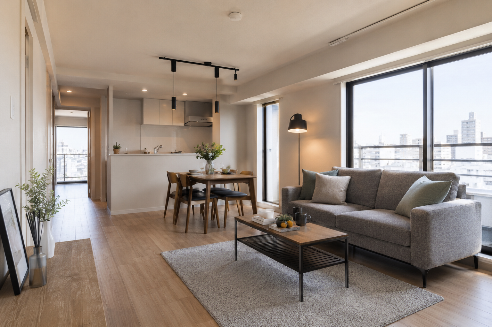

20代後半・男性
転職前 飲食店員
転職後 住宅設備の営業員
年収 250万円UP
未経験でも高月給からスタートできる点が魅力的でした

実家を出たい。毎月の支払いを気にせず遊びたい。
いまの年収のままでは難しいことも、変えられます。
ご相談・ご登録は無料です
こんなお悩みありませんか？
手取り20万円から家賃を引くと、残るのは生活費でほとんど消えていきます。
節約や努力が足りないわけではありません。そもそもの収入が、いまの暮らしに追いついていないだけです。
同じ支出でも、手取りが10万円変われば、
1か月に自由に使える金額はこれだけ差がつきます。
※ 家賃・生活費・貯金額を同額とした場合の試算です。手取り額は年収・扶養等により変動します。
ポイント①
10年以上、企業と直接やりとりを続けてきたからこそ、転職サイトには出てこない年収の高い求人を紹介できます。
ポイント②
営業・マーケター・人事など、20種類以上の職種を保有。
やりたい仕事を、選択肢の中から選べます。
ポイント③
学歴・資格・職歴を問わない求人をご紹介。
未経験でも、今の年収から100万円以上の収入アップを目指せます。
実際にご利用いただいた20代の方の事例です。
20代後半・男性
年収 250万円UP
未経験でも高月給からスタートできる点が魅力的でした
20代後半・男性
年収 100万円UP
自分ひとりでは書類も面接も通らず、困っていました
20代前半・女性
年収 100万円UP
自分では知ることのできない求人をいくつもご提案いただきました
横にスワイプできます
里岡 龍太郎
キャリアアドバイザー
過去に捉われず、5年、10年先の未来を一緒に本気で作りに行く最強のパートナーでありたいと思っています。
西田 園
キャリアアドバイザー
企業様と同じ目線で採用に向き合い、採用をゴールとせず、入社後の活躍へと続く確かなご縁をつなぎます。
高橋 渉
キャリアアドバイザー
企業の本音や現場のリアルを聞き出す“採用攻略オタク”として全力で伴走します。
足立 小夏
キャリアアドバイザー
転職を「ゴール」ではなく新たな「スタート」と考え、最後まであなたに寄り添います。
吉本 歩夢
キャリアアドバイザー
信頼は、結果の積み重ねでしか築けないと思っています。ご紹介する一人ひとりに責任を持ち、求職者様の本音をフラットにお伝えすることで、信頼頂けるパートナーでありたいと思っています。
星 涼太
キャリアアドバイザー
なんとなくで終わらせない。スキルは【資産】です！未経験からでも強いスキルを身につけるお手伝いをさせてください！
横にスワイプできます
フォームのご入力は約1分。
キャリアアドバイザーよりご案内いたします。